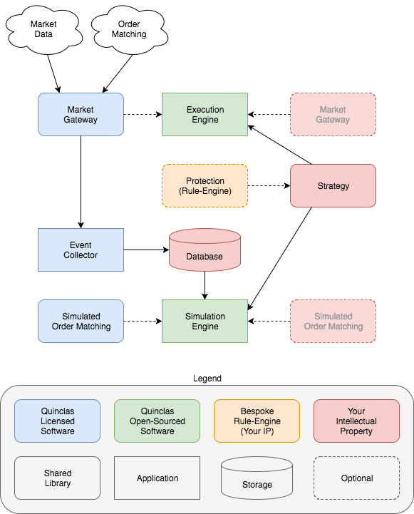

Quinclas — programmatic access to broker API’s.¶
Design¶
Who is this for?¶
- Startup funds
- Algorithmic traders
- Quant developers
- C++ developers
- Python developers
The proposition¶
- You own your strategy. Nobody else will have to see your code or binaries.
- You can run your own strategies on your own hosts. To achieve this we will make a generic framework available on github.
- You can license supported and tested market gateways. To save yourself the tedious work.
- Or you can write your own access to brokers or markets. It is an open platform. You are free to improve where you see an opportunity.
- You can partner with us to have bespoke solutions implemented. Automatic tests against certain limits may help to protect you from losses, increased fees or market lock–out.
Solutions¶
- Gateways for standard broker interfaces. We have currently partnered with existing funds to develop, test and make gateways available.
- Expertise gained from developing protective rule–engines suitable for the use–cases of our partners.
- An execution engine leveraging licensed gateways, your strategy, and optionally your own protective rule–engine.
- Generic simulated gateway implementing basic order–matching for a few standard order types, e.g. market– and limit–orders.
- Generic event collector as an enabler for your historical simulation and back–testing.
- A simulation engine leveraging historically collected events and the generic simulation gateway.
- All tools and libraries open–sourced and available for C++11 and Python 2/3.
Why should you consider this solution?¶
- You work for a small fund or a startup and you don’t have access to the resources normally available to the larger players.
- You appreciate the idea that standardized market access will help you access liquidity offered by various brokers as your fund grows bigger.
- You think it is more beneficial to focus on your own algorithms rather than spend a lot of time on the communication protocol to the broker.
- You believe a partnership is beneficial because access to industry–wide ideas will help you keep up.
Is there a catch?¶
Only options. No obligations. There is no catch.
Everything is designed so you can implement your own solutions, if you should wish to do so.
However, if you choose to do everything yourself, you should consider that there will be an re–occuring task to keep up with broker API’s. That will not be a negligible task. We believe it makes better sense to share this workload with as many clients as possible. So for this use–case, a licensed solution might seem a better option.
We appreciate rule–engines can be very specific to each client. Consultancy is probably a better fit for these kind of use–cases.
It is very simple
- We want to help you feel a little more secure when you auto–execute your strategies.
- We want to own the solutions where we think it makes best sense to offer high–quality supported solutions to a number of clients.
- We want to work in partnership with you such that we both learn from our experiences.
- We want to build a community with generic open–sourced tooling.